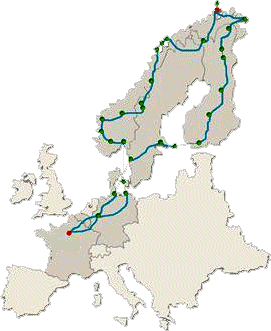

En quoi consiste le Raid Paris Cap-Nord ?
Le circuit en image :
Le Raid Paris Cap-Nord est une épreuve regroupant à la fois l’automobile, la photo et le reportage. Cette aventure, créée par Philippe Boucher en 1988 est ouverte à tous sans limite d’âge. Il ne s’agit pas d’une course de vitesse de type rallye mais d’un “raid” photo, nature, aventure, culture. Pendant un mois, plusieurs équipages d’une, deux, trois, quatre ou plus de personnes sillonnent l’Europe jusqu’à son point le plus septentrional : Le Cap Nord, en Norvège. Ce périple d’environ 12 000 kilomètres de Paris au Cap Nord (aller/retour) est parcouru en étapes journalières d’environ 350 Km en suivant les indications d’un journal de bord.
Le classement final de ce raid est établi à partir de trois critères :
- des points de contrôle qui permettent de vérifier le respect de l’itinéraire suggéré dans le journal de bord et des fourchettes horaires (deux à trois heures) ;
- ensuite, il y a les photos (deux par thème : portrait, image d’actualité, paysage représentatif de la Scandinavie, couleurs, photo représentative du Raid, thème libre, etc.) à présenter à plusieurs reprises pendant le raid à un jury composé de personnalités de la photographie, du journalisme et/ou de représentants locaux ;
- enfin, il y a un reportage écrit sur un thème libre mais autre que sur le raid en lui-même.
Quelques différents pays du parcours :